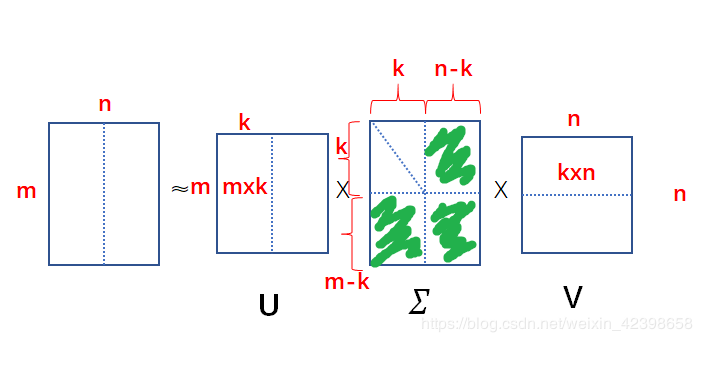
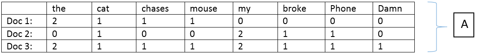
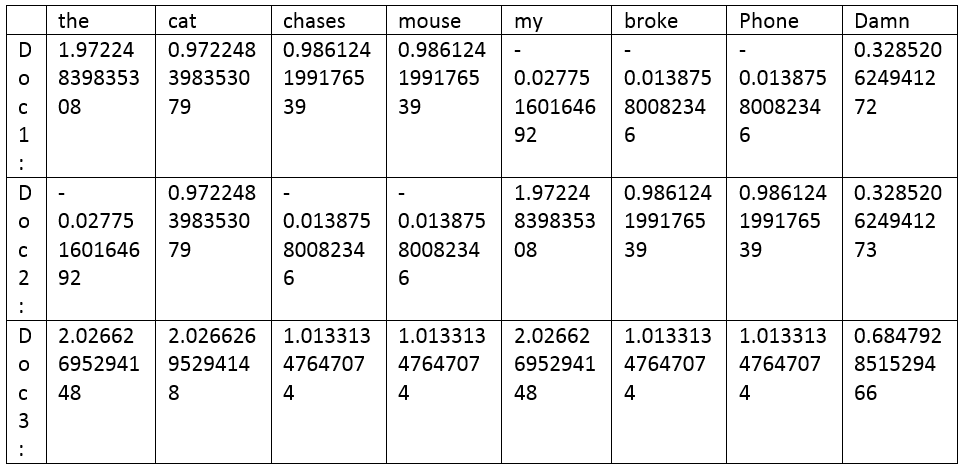

Singular Value Decomposition
沒有限定矩陣大小
假設有一大小為mxn的矩陣A，我們希望能將矩陣A分解成三個矩陣且三個矩陣相乘能夠與矩陣A相同，
即符合A = U x D(sigma) x V 的式子
其中U、V為正交矩陣，D為A的奇異值，是一個對角矩陣(也就是只有對角線的位置有大於等於零的值，其餘皆為零)
分解圖如下:
k是我們可以自訂的特徵值個數
假設我們取k個特徵值，圖片上綠色的區塊，就是被我們捨棄的特徵值，此時的UDV只能稱作約等於矩陣A

SVD神奇的地方在於，降低sigma matrix的維度再進行UxDxV的運算，乘出來的結果也不會和A的矩陣相差太遠，仍然可以保留矩陣A的特性。
藉由這樣的特性，我們可以透過降低sigma的維度，減少運算的計算量(節省記憶體空間)，可以應用在資料壓縮的應用上。
假設語料庫中有三份文件，文件內容如下:
Doc1 : The cat chases the mouse.
Doc2 : My cat broke my phone.
Doc3 : The cat chases the mouse. My cat broke my phone.Damn!
經斷詞、頻率分析後，我們可以得到一個3x8的矩陣(以下稱之為矩陣A)

再經過SVD(一連串運算)分解成三個矩陣

矩陣A(3x8) = U(3x2)* D(2x2) * V(2x8)
得到SVD分解的結果後，基本上，我們就可以捨棄矩陣A，以UDV代替

根據上述的SVD特性:可以減少資料量，檢驗一下這個範例的結果
原本需要 38 = 24 資料空間
k=2，經過SVD轉換後: 32=6 + 22=4 + 28=16 => 26 資料空間
k=1，經故SVD轉換後: 31=3 + 11=1 + 1*8=8 => 12 資料空間
試試看資料量大的情況:
假設若原本的資料量:100100=10000
k=2，經SVD分解後: 1002=200 + 22=4 + 2100=200 => 444 資料空間
10000 => 444 省超多!!!